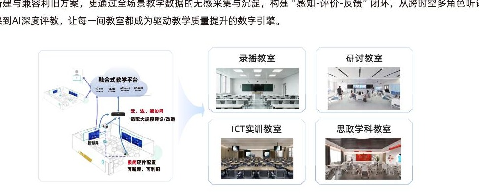
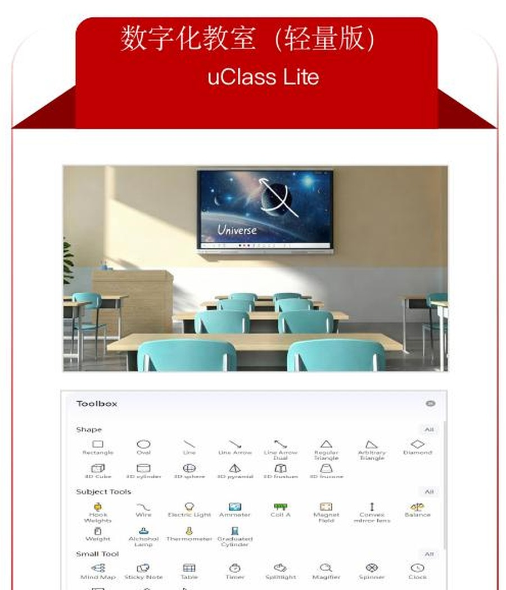
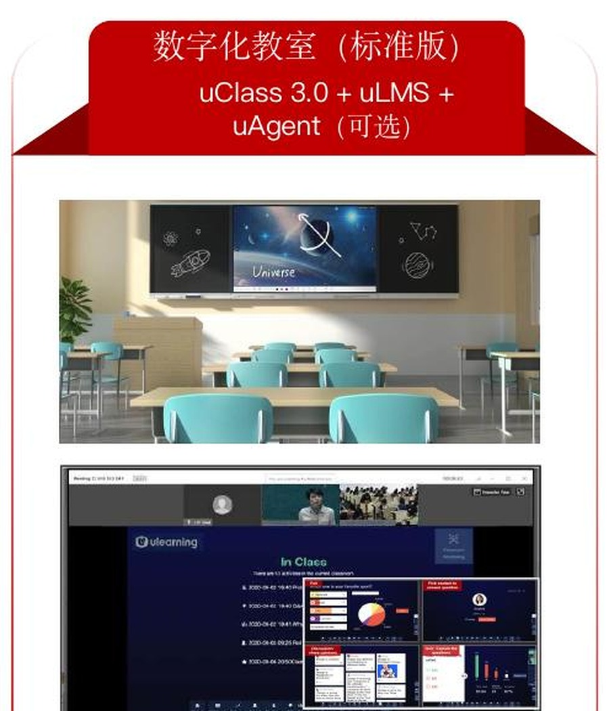
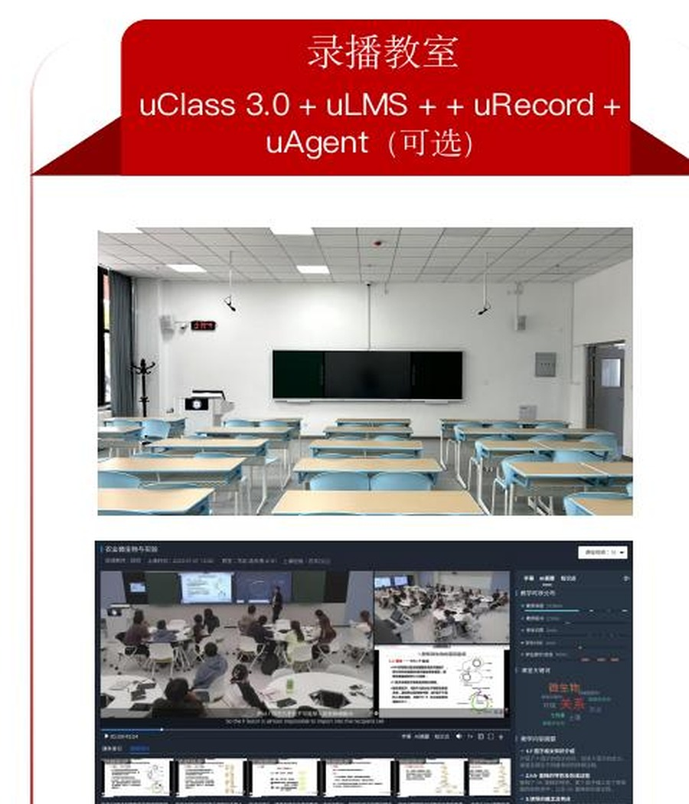
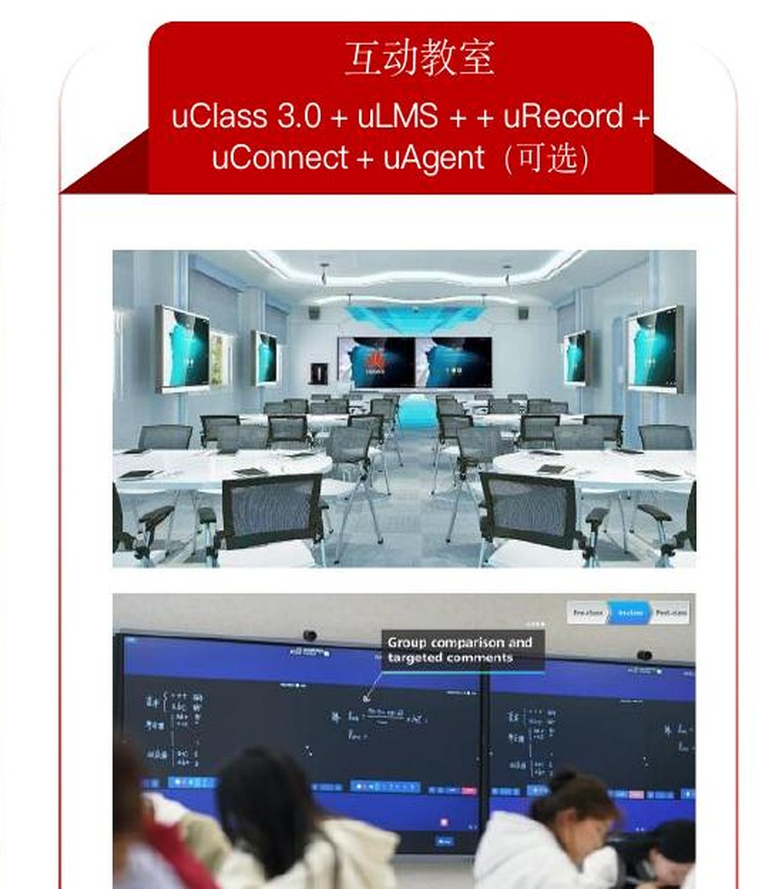

uClass
课堂互动系统连接教师大屏与学生终端，支持多元互动教学、即时反馈评价、画笔和学科工具，形成沉浸式课堂体验。
02 SMART EDUCATION
面向全球，聚焦葡语（西语）地区，提供成熟的智慧教育产品，输出中国教育出海方案；以“师—机—生三元协同”构建人工智能与教育教学深度融合的新范式。
1 + 1 + 4 + N
数据安全、自主可控的基座承载线上线下一体化环境，四大教学应用进一步支撑教、学、管、考、评等多元场景。
连接教师大屏与学生终端，支持多元互动教学、即时反馈评价、画笔和学科工具，形成沉浸式课堂体验。
统一管理课程、资源、学习路径、作业与考核，沉淀学习过程数据，为教学管理和个性化学习提供依据。
完成课堂视频录制、资源管理和多模态数据采集，支持课堂教学分析、智能评价、质量追踪与持续改进。
提供 AI 备课、AI 学伴、AI 课堂工具和智能决策支持，让教师拥有助教、学生拥有学伴、课程持续进化。
未来学习中心 + 融合式教学平台，实现虚实映射、实时交互、数据驱动与智能协同。

数据安全 / 自主可控
CLASSROOM LEVELS
按照教学空间、互动深度与录播需求划分四档方案，可从轻量数字化起步，逐级扩展到标准、录播及多屏互动教室。

LEVEL 01
LEVEL 02
LEVEL 03
LEVEL 04ENVIRONMENT
以云—边—端协同架构与全栈自主数智底座重塑传统教室边界，兼容已有空间与设备，支持录播、研讨、ICT 实训和学科教学等多类教室快速接入。
通过全场景教学数据的无感采集与沉淀，构建“感知—评价—反馈”闭环，从跨时空多角色听评课到 AI 深度评教，让每一间教室成为教学质量持续提升的数字引擎。